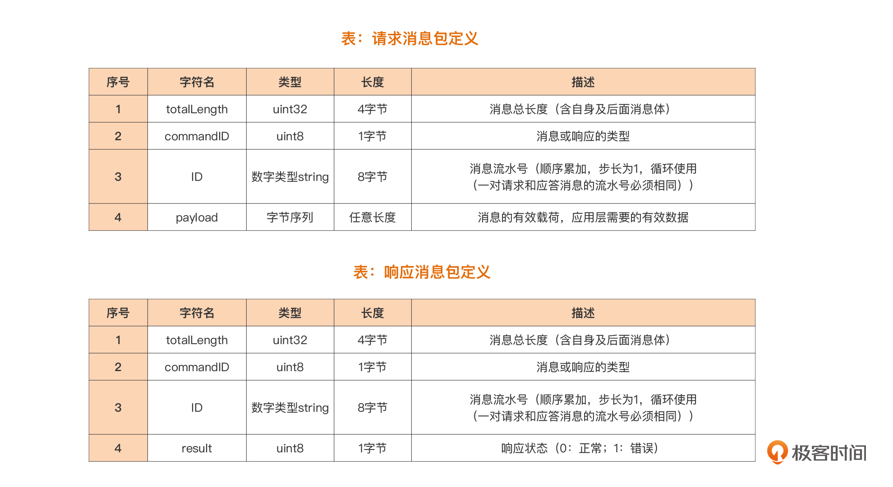
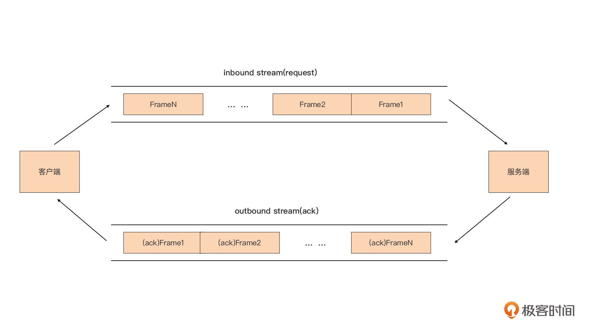
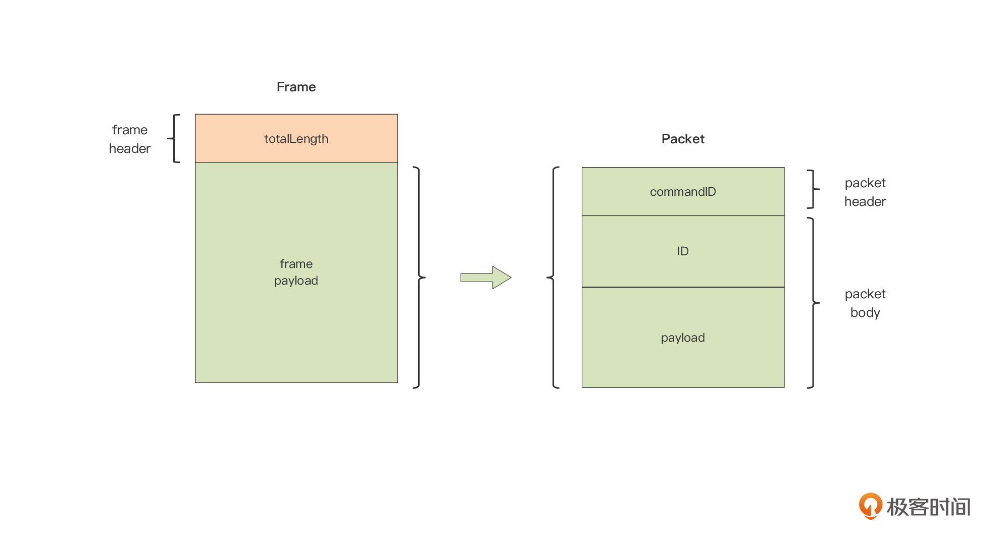
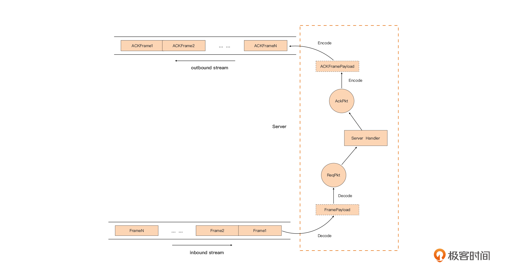

- 00 开篇词 这样入门Go，才能少走弯路.md.html
- 01 前世今生：你不得不了解的Go的历史和现状.md.html
- 02 拒绝“Hello and Bye”：Go语言的设计哲学是怎么一回事？.md.html
- 03 配好环境：选择一种最适合你的Go安装方法.md.html
- 04 初窥门径：一个Go程序的结构是怎样的？.md.html
- 05 标准先行：Go项目的布局标准是什么？.md.html
- 06 构建模式：Go是怎么解决包依赖管理问题的？.md.html
- 07 构建模式：Go Module的6类常规操作.md.html
- 08 入口函数与包初始化：搞清Go程序的执行次序.md.html
- 09 即学即练：构建一个Web服务就是这么简单.md.html
- 10 变量声明：静态语言有别于动态语言的重要特征.md.html
- 11 代码块与作用域：如何保证变量不会被遮蔽？.md.html
- 12 基本数据类型：Go原生支持的数值类型有哪些？.md.html
- 13 基本数据类型：为什么Go要原生支持字符串类型？.md.html
- 14 常量：Go在“常量”设计上的创新有哪些？.md.html
- 15 同构复合类型：从定长数组到变长切片.md.html
- 16 复合数据类型：原生map类型的实现机制是怎样的？.md.html
- 17 复合数据类型：用结构体建立对真实世界的抽象.md.html
- 18 控制结构：if的“快乐路径”原则.md.html
- 19 控制结构：Go的for循环，仅此一种.md.html
- 20 控制结构：Go中的switch语句有哪些变化？.md.html
- 21 函数：请叫我“一等公民”.md.html
- 22 函数：怎么结合多返回值进行错误处理？.md.html
- 23 函数：怎么让函数更简洁健壮？.md.html
- 24 方法：理解“方法”的本质.md.html
- 25 方法：方法集合与如何选择receiver类型？.md.html
- 26 方法：如何用类型嵌入模拟实现“继承”？.md.html
- 27 即学即练：跟踪函数调用链，理解代码更直观.md.html
- 28 接口：接口即契约.md.html
- 29 接口：为什么nil接口不等于nil？.md.html
- 30 接口：Go中最强大的魔法.md.html
- 31 并发：Go的并发方案实现方案是怎样的？.md.html
- 32 并发：聊聊Goroutine调度器的原理.md.html
- 33 并发：小channel中蕴含大智慧.md.html
- 34 并发：如何使用共享变量？.md.html
- 35 即学即练：如何实现一个轻量级线程池？.md.html
- 36 打稳根基：怎么实现一个TCP服务器？（上）.md.html
- 37 代码操练：怎么实现一个TCP服务器？（中）.md.html
- 38 成果优化：怎么实现一个TCP服务器？（下）.md.html
- 39 驯服泛型：了解类型参数.md.html
- 40 驯服泛型：定义泛型约束.md.html
- 41 驯服泛型：明确使用时机.md.html
- 元旦快乐 这是一份暂时停更的声明.md.html
- 加餐 作为Go Module的作者，你应该知道的几件事.md.html
- 加餐 如何拉取私有的Go Module？.md.html
- 加餐 我“私藏”的那些优质且权威的Go语言学习资料.md.html
- 加餐 聊聊Go 1.17版本的那些新特性.md.html
- 加餐 聊聊Go语言的指针.md.html
- 加餐 聊聊最近大热的Go泛型.md.html
- 大咖助阵 叶剑峰：Go语言中常用的那些代码优化点.md.html
- 大咖助阵 大明：Go泛型，泛了，但没有完全泛.md.html
- 大咖助阵 孔令飞：从小白到“老鸟”，我的Go语言进阶之路.md.html
- 大咖助阵 徐祥曦：从销售到分布式存储工程师，我与 Go 的故事.md.html
- 大咖助阵 曹春晖：聊聊 Go 语言的 GC 实现.md.html
- 大咖助阵 海纳：聊聊语言中的类型系统与泛型.md.html
- 期中测试 一起检验下你的学习成果吧.md.html
- 用户故事 罗杰：我的Go语言学习之路.md.html
- 结束语 和你一起迎接Go的黄金十年.md.html
- 结课测试 快来检验下你的学习成果吧！.md.html
- 捐赠
37 代码操练：怎么实现一个TCP服务器？（中）
你好，我是Tony Bai。
上一讲中，我们讲解了解决Go语言学习“最后一公里”的实用思路，那就是“理解问题” -> “技术预研与储备” -> “设计与实现”的三角循环，并且我们也完成了“理解问题”和“技术预研与储备”这两个环节，按照“三角循环”中的思路，这一讲我们应该针对实际问题进行一轮设计与实现了。
今天，我们的目标是实现一个基于TCP的自定义应用层协议的通信服务端，要完成这一目标，我们需要建立协议的抽象、实现协议的打包与解包、服务端的组装、验证与优化等工作。一步一步来，我们先在程序世界建立一个对上一讲中自定义应用层协议的抽象。
建立对协议的抽象
程序是对现实世界的抽象。对于现实世界的自定义应用协议规范，我们需要在程序世界建立起对这份协议的抽象。在进行抽象之前，我们先建立这次实现要用的源码项目tcp-server-demo1，建立的步骤如下：
$mkdir tcp-server-demo1
$cd tcp-server-demo1
$go mod init github.com/bigwhite/tcp-server-demo1
go: creating new go.mod: module github.com/bigwhite/tcp-server-demo1
为了方便学习，我这里再将上一讲中的自定义协议规范贴出来对照参考：

深入协议字段
上一讲，我们没有深入到协议规范中对协议的各个字段进行讲解，但在建立抽象之前，我们有必要了解一下各个字段的具体含义。
这是一个高度简化的、基于二进制模式定义的协议。二进制模式定义的特点，就是采用长度字段标识独立数据包的边界。
在这个协议规范中，我们看到：请求包和应答包的第一个字段（totalLength）都是包的总长度，它就是用来标识包边界的那个字段，也是在应用层用于“分割包”的最重要字段。
请求包与应答包的第二个字段也一样，都是commandID，这个字段用于标识包类型，这里我们定义四种包类型：
- 连接请求包（值为0x01）
- 消息请求包（值为0x02）
- 连接响应包（值为0x81）
- 消息响应包（值为0x82）
换为对应的代码就是：
const (
CommandConn = iota + 0x01 // 0x01，连接请求包
CommandSubmit // 0x02，消息请求包
)
const (
CommandConnAck = iota + 0x81 // 0x81，连接请求的响应包
CommandSubmitAck // 0x82，消息请求的响应包
)
请求包与应答包的第三个字段都是ID，ID是每个连接上请求包的消息流水号，顺序累加，步长为1，循环使用，多用来请求发送方后匹配响应包，所以要求一对请求与响应消息的流水号必须相同。
请求包与响应包唯一的不同之处，就在于最后一个字段：请求包定义了有效载荷（payload），这个字段承载了应用层需要的业务数据；而响应包则定义了请求包的响应状态字段（result），这里其实简化了响应状态字段的取值，成功的响应用0表示，如果是失败的响应，无论失败原因是什么，我们都用1来表示。
明确了应用层协议的各个字段定义之后，我们接下来就看看如何建立起对这个协议的抽象。
建立Frame和Packet抽象
首先我们要知道，TCP连接上的数据是一个没有边界的字节流，但在业务层眼中，没有字节流，只有各种协议消息。因此，无论是从客户端到服务端，还是从服务端到客户端，业务层在连接上看到的都应该是一个挨着一个的协议消息流。
现在我们建立第一个抽象：Frame。每个Frame表示一个协议消息，这样在业务层眼中，连接上的字节流就是由一个接着一个Frame组成的，如下图所示：

我们的自定义协议就封装在这一个个的Frame中。协议规定了将Frame分割开来的方法，那就是利用每个Frame开始处的totalLength，每个Frame由一个totalLength和Frame的负载（payload）构成，比如你可以看看下图中左侧的Frame结构：

这样，我们通过Frame header: totalLength就可以将Frame之间隔离开来。
在这个基础上，我们建立协议的第二个抽象：Packet。我们将Frame payload定义为一个Packet。上图右侧展示的就是Packet的结构。
Packet就是业务层真正需要的消息，每个Packet由Packet头和Packet Body部分组成。Packet头就是commandID，用于标识这个消息的类型；而ID和payload（packet payload）或result字段组成了Packet的Body部分，对业务层有价值的数据都包含在Packet Body部分。
那么到这里，我们就通过Frame和Packet两个类型结构，完成了程序世界对我们私有协议规范的抽象。接下来，我们要做的就是基于Frame和Packet这两个概念，实现对我们私有协议的解包与打包操作。
协议的解包与打包
所谓协议的解包（decode），就是指识别TCP连接上的字节流，将一组字节“转换”成一个特定类型的协议消息结构，然后这个消息结构会被业务处理逻辑使用。
而打包（encode）刚刚好相反，是指将一个特定类型的消息结构转换为一组字节，然后这组字节数据会被放在连接上发送出去。
具体到我们这个自定义协议上，解包就是指字节流 -> Frame，打包是指Frame -> 字节流。你可以看一下针对这个协议的服务端解包与打包的流程图：

我们看到，TCP流数据先后经过frame decode和packet decode，得到应用层所需的packet数据，而业务层回复的响应，则先后经过packet的encode与frame的encode，写入TCP数据流中。
到这里，我们实际上已经完成了协议抽象的设计与解包打包原理的设计过程了。接下来，我们先来看看私有协议部分的相关代码实现。
Frame的实现
前面说过，协议部分最重要的两个抽象是Frame和Packet，于是我们就在项目中建立frame包与packet包，分别与两个协议抽象对应。frame包的职责是提供识别TCP流边界的编解码器，我们可以很容易为这样的编解码器，定义出一个统一的接口类型StreamFrameCodec：
// tcp-server-demo1/frame/frame.go
type FramePayload []byte
type StreamFrameCodec interface {
Encode(io.Writer, FramePayload) error // data -> frame，并写入io.Writer
Decode(io.Reader) (FramePayload, error) // 从io.Reader中提取frame payload，并返回给上层
}
StreamFrameCodec接口类型有两个方法Encode与Decode。Encode方法用于将输入的Frame payload编码为一个Frame，然后写入io.Writer所代表的输出（outbound）TCP流中。而Decode方法正好相反，它从代表输入（inbound）TCP流的io.Reader中读取一个完整Frame，并将得到的Frame payload解析出来并返回。
这里，我们给出一个针对我们协议的StreamFrameCodec接口的实现：
// tcp-server-demo1/frame/frame.go
var ErrShortWrite = errors.New("short write")
var ErrShortRead = errors.New("short read")
type myFrameCodec struct{}
func NewMyFrameCodec() StreamFrameCodec {
return &myFrameCodec{}
}
func (p *myFrameCodec) Encode(w io.Writer, framePayload FramePayload) error {
var f = framePayload
var totalLen int32 = int32(len(framePayload)) + 4
err := binary.Write(w, binary.BigEndian, &totalLen)
if err != nil {
return err
}
n, err := w.Write([]byte(f)) // write the frame payload to outbound stream
if err != nil {
return err
}
if n != len(framePayload) {
return ErrShortWrite
}
return nil
}
func (p *myFrameCodec) Decode(r io.Reader) (FramePayload, error) {
var totalLen int32
err := binary.Read(r, binary.BigEndian, &totalLen)
if err != nil {
return nil, err
}
buf := make([]byte, totalLen-4)
n, err := io.ReadFull(r, buf)
if err != nil {
return nil, err
}
if n != int(totalLen-4) {
return nil, ErrShortRead
}
return FramePayload(buf), nil
}
在在这段实现中，有三点事项需要我们注意：
- 网络字节序使用大端字节序（BigEndian），因此无论是Encode还是Decode，我们都是用binary.BigEndian；
- binary.Read或Write会根据参数的宽度，读取或写入对应的字节个数的字节，这里totalLen使用int32，那么Read或Write只会操作数据流中的4个字节；
- 这里没有设置网络I/O操作的Deadline，io.ReadFull一般会读满你所需的字节数，除非遇到EOF或ErrUnexpectedEOF。
在工程实践中，保证打包与解包正确的最有效方式就是编写单元测试，StreamFrameCodec接口的Decode和Encode方法的参数都是接口类型，这让我们可以很容易为StreamFrameCodec接口的实现编写测试用例。下面是我为myFrameCodec编写了两个测试用例：
// tcp-server-demo1/frame/frame_test.go
func TestEncode(t *testing.T) {
codec := NewMyFrameCodec()
buf := make([]byte, 0, 128)
rw := bytes.NewBuffer(buf)
err := codec.Encode(rw, []byte("hello"))
if err != nil {
t.Errorf("want nil, actual %s", err.Error())
}
// 验证Encode的正确性
var totalLen int32
err = binary.Read(rw, binary.BigEndian, &totalLen)
if err != nil {
t.Errorf("want nil, actual %s", err.Error())
}
if totalLen != 9 {
t.Errorf("want 9, actual %d", totalLen)
}
left := rw.Bytes()
if string(left) != "hello" {
t.Errorf("want hello, actual %s", string(left))
}
}
func TestDecode(t *testing.T) {
codec := NewMyFrameCodec()
data := []byte{0x0, 0x0, 0x0, 0x9, 'h', 'e', 'l', 'l', 'o'}
payload, err := codec.Decode(bytes.NewReader(data))
if err != nil {
t.Errorf("want nil, actual %s", err.Error())
}
if string(payload) != "hello" {
t.Errorf("want hello, actual %s", string(payload))
}
}
我们看到，测试Encode方法，我们其实不需要建立真实的网络连接，只要用一个满足io.Writer的bytes.Buffer实例“冒充”真实网络连接就可以了，同时bytes.Buffer类型也实现了io.Reader接口，我们可以很方便地从中读取出Encode后的内容，并进行校验比对。
为了提升测试覆盖率，我们还需要尽可能让测试覆盖到所有可测的错误执行分支上。这里，我模拟了Read或Write出错的情况，让执行流进入到Decode或Encode方法的错误分支中：
type ReturnErrorWriter struct {
W io.Writer
Wn int // 第几次调用Write返回错误
wc int // 写操作次数计数
}
func (w *ReturnErrorWriter) Write(p []byte) (n int, err error) {
w.wc++
if w.wc >= w.Wn {
return 0, errors.New("write error")
}
return w.W.Write(p)
}
type ReturnErrorReader struct {
R io.Reader
Rn int // 第几次调用Read返回错误
rc int // 读操作次数计数
}
func (r *ReturnErrorReader) Read(p []byte) (n int, err error) {
r.rc++
if r.rc >= r.Rn {
return 0, errors.New("read error")
}
return r.R.Read(p)
}
func TestEncodeWithWriteFail(t *testing.T) {
codec := NewMyFrameCodec()
buf := make([]byte, 0, 128)
w := bytes.NewBuffer(buf)
// 模拟binary.Write返回错误
err := codec.Encode(&ReturnErrorWriter{
W: w,
Wn: 1,
}, []byte("hello"))
if err == nil {
t.Errorf("want non-nil, actual nil")
}
// 模拟w.Write返回错误
err = codec.Encode(&ReturnErrorWriter{
W: w,
Wn: 2,
}, []byte("hello"))
if err == nil {
t.Errorf("want non-nil, actual nil")
}
}
func TestDecodeWithReadFail(t *testing.T) {
codec := NewMyFrameCodec()
data := []byte{0x0, 0x0, 0x0, 0x9, 'h', 'e', 'l', 'l', 'o'}
// 模拟binary.Read返回错误
_, err := codec.Decode(&ReturnErrorReader{
R: bytes.NewReader(data),
Rn: 1,
})
if err == nil {
t.Errorf("want non-nil, actual nil")
}
// 模拟io.ReadFull返回错误
_, err = codec.Decode(&ReturnErrorReader{
R: bytes.NewReader(data),
Rn: 2,
})
if err == nil {
t.Errorf("want non-nil, actual nil")
}
}
为了实现错误分支的测试，我们在测试代码源文件中创建了两个类型：ReturnErrorWriter和ReturnErrorReader，它们分别实现了io.Writer与io.Reader。
我们可以控制在第几次调用这两个类型的Write或Read方法时，返回错误，这样就可以让Encode或Decode方法按照我们的意图，进入到不同错误分支中去。有了这两个用例，我们的frame包的测试覆盖率（通过go test -cover .可以查看）就可以达到90%以上了。
Packet的实现
接下来，我们再看看Packet这个抽象的实现。和Frame不同，Packet有多种类型（这里只定义了Conn、submit、connack、submit ack)。所以我们要先抽象一下这些类型需要遵循的共同接口：
// tcp-server-demo1/packet/packet.go
type Packet interface {
Decode([]byte) error // []byte -> struct
Encode() ([]byte, error) // struct -> []byte
}
其中，Decode是将一段字节流数据解码为一个Packet类型，可能是conn，可能是submit等，具体我们要根据解码出来的commandID判断。而Encode则是将一个Packet类型编码为一段字节流数据。
考虑到篇幅与复杂性，我们这里只完成submit和submitack类型的Packet接口实现，省略了conn流程，也省略conn以及connack类型的实现，你可以课后自己思考一下有conn流程时代码应该如何调整。
// tcp-server-demo1/packet/packet.go
type Submit struct {
ID string
Payload []byte
}
func (s *Submit) Decode(pktBody []byte) error {
s.ID = string(pktBody[:8])
s.Payload = pktBody[8:]
return nil
}
func (s *Submit) Encode() ([]byte, error) {
return bytes.Join([][]byte{[]byte(s.ID[:8]), s.Payload}, nil), nil
}
type SubmitAck struct {
ID string
Result uint8
}
func (s *SubmitAck) Decode(pktBody []byte) error {
s.ID = string(pktBody[0:8])
s.Result = uint8(pktBody[8])
return nil
}
func (s *SubmitAck) Encode() ([]byte, error) {
return bytes.Join([][]byte{[]byte(s.ID[:8]), []byte{s.Result}}, nil), nil
}
这里各种类型的编解码被调用的前提，是明确数据流是什么类型的，因此我们需要在包级提供一个导出的函数Decode，这个函数负责从字节流中解析出对应的类型（根据commandID），并调用对应类型的Decode方法：
// tcp-server-demo1/packet/packet.go
func Decode(packet []byte) (Packet, error) {
commandID := packet[0]
pktBody := packet[1:]
switch commandID {
case CommandConn:
return nil, nil
case CommandConnAck:
return nil, nil
case CommandSubmit:
s := Submit{}
err := s.Decode(pktBody)
if err != nil {
return nil, err
}
return &s, nil
case CommandSubmitAck:
s := SubmitAck{}
err := s.Decode(pktBody)
if err != nil {
return nil, err
}
return &s, nil
default:
return nil, fmt.Errorf("unknown commandID [%d]", commandID)
}
}
同样，我们也需要包级的Encode函数，根据传入的packet类型调用对应的Encode方法实现对象的编码：
// tcp-server-demo1/packet/packet.go
func Encode(p Packet) ([]byte, error) {
var commandID uint8
var pktBody []byte
var err error
switch t := p.(type) {
case *Submit:
commandID = CommandSubmit
pktBody, err = p.Encode()
if err != nil {
return nil, err
}
case *SubmitAck:
commandID = CommandSubmitAck
pktBody, err = p.Encode()
if err != nil {
return nil, err
}
default:
return nil, fmt.Errorf("unknown type [%s]", t)
}
return bytes.Join([][]byte{[]byte{commandID}, pktBody}, nil), nil
}
不过，对packet包中各个类型的Encode和Decode方法的测试，与frame包的相似，这里我就把为packet包编写单元测试的任务就交给你自己完成了，如果有什么问题欢迎在留言区留言。
好了，万事俱备，只欠东风！下面我们就来编写服务端的程序结构，将tcp conn与Frame、Packet连接起来。
服务端的组装
在上一讲中，我们按照每个连接一个Goroutine的模型，给出了典型Go网络服务端程序的结构，这里我们就以这个结构为基础，将Frame、Packet加进来，形成我们的第一版服务端实现：
// tcp-server-demo1/cmd/server/main.go
package main
import (
"fmt"
"net"
"github.com/bigwhite/tcp-server-demo1/frame"
"github.com/bigwhite/tcp-server-demo1/packet"
)
func handlePacket(framePayload []byte) (ackFramePayload []byte, err error) {
var p packet.Packet
p, err = packet.Decode(framePayload)
if err != nil {
fmt.Println("handleConn: packet decode error:", err)
return
}
switch p.(type) {
case *packet.Submit:
submit := p.(*packet.Submit)
fmt.Printf("recv submit: id = %s, payload=%s\n", submit.ID, string(submit.Payload))
submitAck := &packet.SubmitAck{
ID: submit.ID,
Result: 0,
}
ackFramePayload, err = packet.Encode(submitAck)
if err != nil {
fmt.Println("handleConn: packet encode error:", err)
return nil, err
}
return ackFramePayload, nil
default:
return nil, fmt.Errorf("unknown packet type")
}
}
func handleConn(c net.Conn) {
defer c.Close()
frameCodec := frame.NewMyFrameCodec()
for {
// decode the frame to get the payload
framePayload, err := frameCodec.Decode(c)
if err != nil {
fmt.Println("handleConn: frame decode error:", err)
return
}
// do something with the packet
ackFramePayload, err := handlePacket(framePayload)
if err != nil {
fmt.Println("handleConn: handle packet error:", err)
return
}
// write ack frame to the connection
err = frameCodec.Encode(c, ackFramePayload)
if err != nil {
fmt.Println("handleConn: frame encode error:", err)
return
}
}
}
func main() {
l, err := net.Listen("tcp", ":8888")
if err != nil {
fmt.Println("listen error:", err)
return
}
for {
c, err := l.Accept()
if err != nil {
fmt.Println("accept error:", err)
break
}
// start a new goroutine to handle the new connection.
go handleConn(c)
}
}
这个程序的逻辑非常清晰，服务端程序监听8888端口，并在每次调用Accept方法后得到一个新连接，服务端程序将这个新连接交到一个新的Goroutine中处理。
新Goroutine的主函数为handleConn，有了Packet和Frame这两个抽象的加持，这个函数同样拥有清晰的代码调用结构：
// handleConn的调用结构
read frame from conn
->frame decode
-> handle packet
-> packet decode
-> packet(ack) encode
->frame(ack) encode
write ack frame to conn
到这里，一个基于TCP的自定义应用层协议的经典阻塞式的服务端就完成了。不过这里的服务端依旧是一个简化的实现，比如我们这里没有考虑支持优雅退出、没有捕捉某个链接上出现的可能导致整个程序退出的panic等，这些我也想作为作业留给你。
接下来，我们就来验证一下这个服务端实现是否能正常工作。
验证测试
要验证服务端的实现是否可以正常工作，我们需要实现一个自定义应用层协议的客户端。这里，我们同样基于frame、packet两个包，实现了一个自定义应用层协议的客户端。下面是客户端的main函数：
// tcp-server-demo1/cmd/client/main.go
func main() {
var wg sync.WaitGroup
var num int = 5
wg.Add(5)
for i := 0; i < num; i++ {
go func(i int) {
defer wg.Done()
startClient(i)
}(i + 1)
}
wg.Wait()
}
我们看到，客户端启动了5个Goroutine，模拟5个并发连接。startClient函数是每个连接的主处理函数，我们来看一下：
func startClient(i int) {
quit := make(chan struct{})
done := make(chan struct{})
conn, err := net.Dial("tcp", ":8888")
if err != nil {
fmt.Println("dial error:", err)
return
}
defer conn.Close()
fmt.Printf("[client %d]: dial ok", i)
// 生成payload
rng, err := codename.DefaultRNG()
if err != nil {
panic(err)
}
frameCodec := frame.NewMyFrameCodec()
var counter int
go func() {
// handle ack
for {
select {
case <-quit:
done <- struct{}{}
return
default:
}
conn.SetReadDeadline(time.Now().Add(time.Second * 5))
ackFramePayLoad, err := frameCodec.Decode(conn)
if err != nil {
if e, ok := err.(net.Error); ok {
if e.Timeout() {
continue
}
}
panic(err)
}
p, err := packet.Decode(ackFramePayLoad)
submitAck, ok := p.(*packet.SubmitAck)
if !ok {
panic("not submitack")
}
fmt.Printf("[client %d]: the result of submit ack[%s] is %d\n", i, submitAck.ID, submitAck.Result)
}
}()
for {
// send submit
counter++
id := fmt.Sprintf("%08d", counter) // 8 byte string
payload := codename.Generate(rng, 4)
s := &packet.Submit{
ID: id,
Payload: []byte(payload),
}
framePayload, err := packet.Encode(s)
if err != nil {
panic(err)
}
fmt.Printf("[client %d]: send submit id = %s, payload=%s, frame length = %d\n",
i, s.ID, s.Payload, len(framePayload)+4)
err = frameCodec.Encode(conn, framePayload)
if err != nil {
panic(err)
}
time.Sleep(1 * time.Second)
if counter >= 10 {
quit <- struct{}{}
<-done
fmt.Printf("[client %d]: exit ok", i)
return
}
}
}
关于startClient函数，我们需要简单说明几点。
首先，startClient函数启动了两个Goroutine，一个负责向服务端发送submit消息请求，另外一个Goroutine则负责读取服务端返回的响应；
其次，客户端发送的submit请求的负载（payload）是由第三方包github.com/lucasepe/codename负责生成的，这个包会生成一些对人类可读的随机字符串，比如：firm-iron、 moving-colleen、game-nova这样的字符串；
另外，负责读取服务端返回响应的Goroutine，使用SetReadDeadline方法设置了读超时，这主要是考虑该Goroutine可以在收到退出通知时，能及时从Read阻塞中跳出来。
好了，现在我们就来构建和运行一下这两个程序。
我在tcp-server-demo1目录下提供了Makefile，如果你使用的是Linux或macOS操作系统，可以直接敲入make构建两个程序，如果你是在Windows下构建，可以直接敲入下面的go build命令构建：
$make
go build github.com/bigwhite/tcp-server-demo1/cmd/server
go build github.com/bigwhite/tcp-server-demo1/cmd/client
构建成功后，我们先来启动server程序：
$./server
server start ok(on *.8888)
然后，我们启动client程序，启动后client程序便会向服务端建立5条连接，并发送submit请求，client端的部分日志如下：
$./client
[client 5]: dial ok
[client 1]: dial ok
[client 5]: send submit id = 00000001, payload=credible-deathstrike-33e1, frame length = 38
[client 3]: dial ok
[client 1]: send submit id = 00000001, payload=helped-lester-8f15, frame length = 31
[client 4]: dial ok
[client 4]: send submit id = 00000001, payload=strong-timeslip-07fa, frame length = 33
[client 3]: send submit id = 00000001, payload=wondrous-expediter-136e, frame length = 36
[client 5]: the result of submit ack[00000001] is 0
[client 1]: the result of submit ack[00000001] is 0
[client 3]: the result of submit ack[00000001] is 0
[client 2]: dial ok
... ...
[client 3]: send submit id = 00000010, payload=bright-monster-badoon-5719, frame length = 39
[client 4]: send submit id = 00000010, payload=crucial-wallop-ec2d, frame length = 32
[client 2]: send submit id = 00000010, payload=pro-caliban-c803, frame length = 29
[client 1]: send submit id = 00000010, payload=legible-shredder-3d81, frame length = 34
[client 5]: send submit id = 00000010, payload=settled-iron-monger-bf78, frame length = 37
[client 3]: the result of submit ack[00000010] is 0
[client 4]: the result of submit ack[00000010] is 0
[client 1]: the result of submit ack[00000010] is 0
[client 2]: the result of submit ack[00000010] is 0
[client 5]: the result of submit ack[00000010] is 0
[client 4]: exit ok
[client 1]: exit ok
[client 3]: exit ok
[client 5]: exit ok
[client 2]: exit ok
client在每条连接上发送10个submit请求后退出。这期间服务端会输出如下日志：
recv submit: id = 00000001, payload=credible-deathstrike-33e1
recv submit: id = 00000001, payload=helped-lester-8f15
recv submit: id = 00000001, payload=wondrous-expediter-136e
recv submit: id = 00000001, payload=strong-timeslip-07fa
recv submit: id = 00000001, payload=delicate-leatherneck-4b12
recv submit: id = 00000002, payload=certain-deadpool-779d
recv submit: id = 00000002, payload=clever-vapor-25ce
recv submit: id = 00000002, payload=causal-guardian-4f84
recv submit: id = 00000002, payload=noted-tombstone-1b3e
... ...
recv submit: id = 00000010, payload=settled-iron-monger-bf78
recv submit: id = 00000010, payload=pro-caliban-c803
recv submit: id = 00000010, payload=legible-shredder-3d81
handleConn: frame decode error: EOF
handleConn: frame decode error: EOF
handleConn: frame decode error: EOF
handleConn: frame decode error: EOF
handleConn: frame decode error: EOF
从结果来看，我们实现的这一版服务端运行正常！
小结
好了，今天的课讲到这里就结束了，现在我们一起来回顾一下吧。
在上一讲完成对socket编程模型、网络I/O操作的技术预研后，这一讲我们正式进入基于TCP的自定义应用层协议的通信服务端的设计与实现环节。
在这一环节中，我们首先建立了对协议的抽象，这是实现通信服务端的基石。我们使用Frame的概念来表示TCP字节流中的每一个协议消息，这使得在业务层的视角下，连接上的字节流就是由一个接着一个Frame组成的。接下来，我们又建立了第二个抽象Packet，来表示业务层真正需要的消息。
在这两个抽象的基础上，我们实现了frame与packet各自的打包与解包，整个实现是低耦合的，我们可以在对frame编写测试用例时体会到这一点。
最后，我们把上一讲提到的、一个Goroutine负责处理一个连接的典型Go网络服务端程序结构与frame、packet的实现组装到一起，就实现了我们的第一版服务端。之后，我们还编写了客户端模拟器对这个服务端的实现做了验证。
这个服务端采用的是Go经典阻塞I/O的编程模型，你是不是已经感受到了这种模型在开发阶段带来的好处了呢！
思考题
在这讲的中间部分，我已经把作业留给你了：
- 为packet包编写单元测试；
- 为我们的服务端增加优雅退出机制，以及捕捉某个链接上出现的可能导致整个程序退出的panic。
项目的源代码在这里！
© 2019 - 2023 Liangliang Lee. Powered by gin and hexo-theme-book.